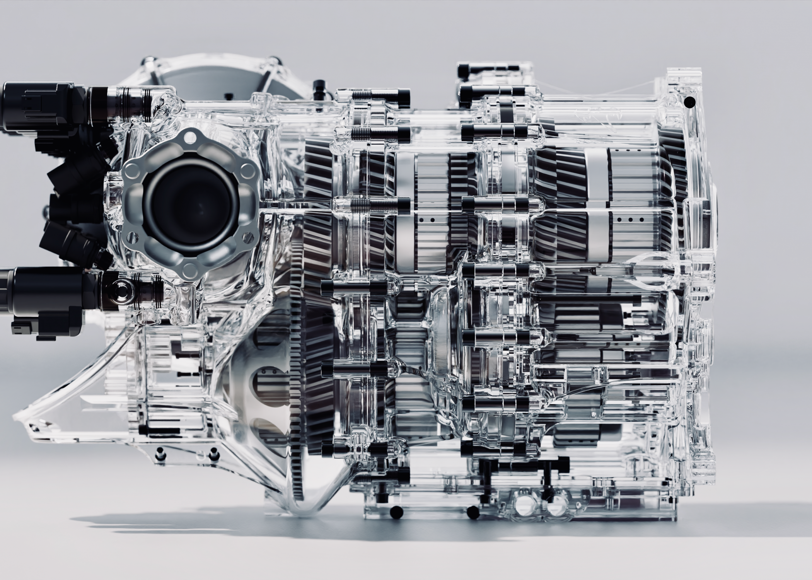
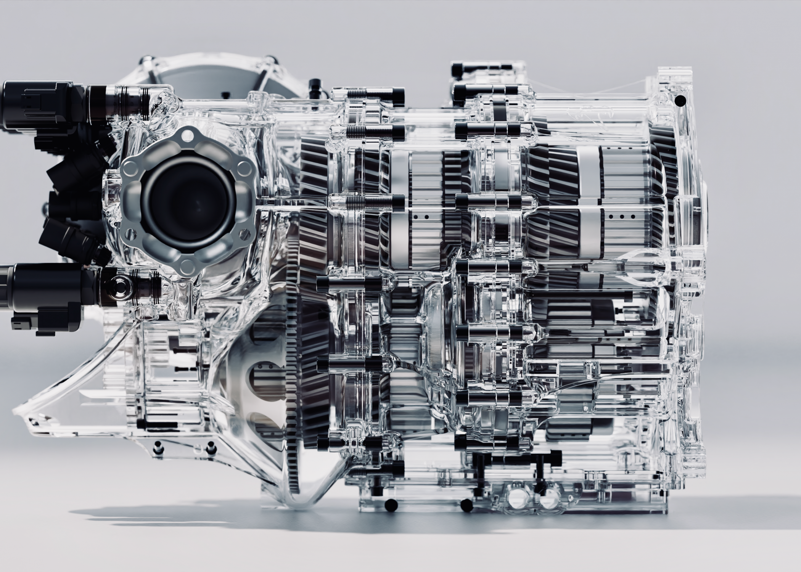

ამ გვერდზე გიამბობთ ყველაზე სწრაფი მანქანის შესახებ
Koenigsegg Jesko არის შეზღუდული წარმოების საშუალო ძრავის სპორტული მანქანა, რომელიც წარმოებულია შვედური ავტომობილების მწარმოებლის Koenigsegg-ის მიერ. მანქანა წარმოდგენილი იყო 2019 წლის ჟენევის მოტორ შოუზე და მთლიანად გაიყიდა შოუს დასრულებამდე. Agera-ს შემდეგ ჯესკო დასახელებულია კომპანიის დამფუძნებლის მამის, ჯესკო ფონ კოენიგსეგის პატივისცემით. არსებობს მანქანის ორი ვარიაცია, „აბსოლუტი“ და „თავდასხმა“.
ძრავა
Jesko-ში გამოყენებული 5.0-ლიტრიანი ორმაგი ტურბო V8 ძრავა გამონაბოლქვი სისტემასთან ერთად
ძრავა არის 5.1 ლიტრიანი (5,065 cc) ორმაგი ტურბო V8 ძრავის განვითარება, რომელიც გამოიყენება Agera-ში. მას აქვს ოთხი სარქველი თითო ცილინდრზე, თითო ნახვრეტითა და დარტყმით 92 მმ × 95,25 მმ (3,62 3,75 ინჩზე) და შეკუმშვის თანაფარდობა 8,6:1. ძრავის სიმძლავრეა 1280 ცხ/წ (1298 ცხენის ძალა; 954 კვტ) 7800 ბრ/წთ-ზე და 1000 N⋅m (738 lb⋅ft) ბრუნვის მომენტი 2700-დან 6170 ბრ/წთ-ზე ნორმალურ ბენზინზე და აქვს სიმძლავრე (1,60 სთ. 1,60 სთ. 1,193 კვტ) და 1,500 N⋅m (1,106 lb⋅ft) ბრუნვის მომენტი 5,100 rpm-ზე E85 ბიოსაწვავზე.\
 
